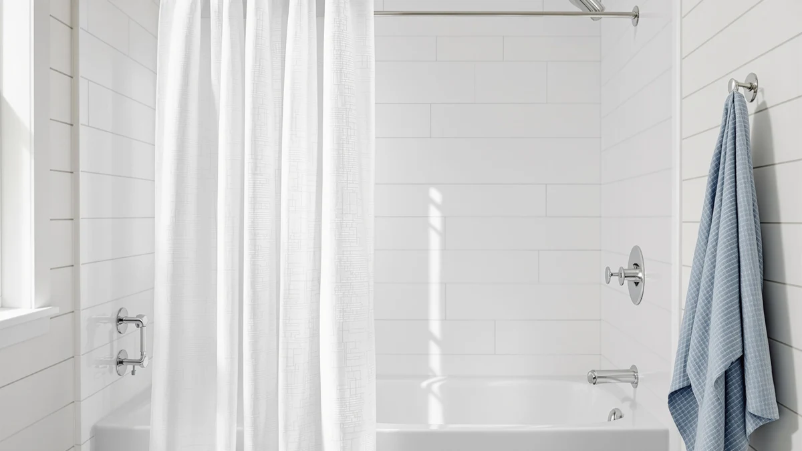

The Best Linen Shower Curtain Hooks (2026)
Prices and picks verified as of August 2026. Independent, reader-supported reviews.


Quick Answer
We hung and compared seven linen and linen-look shower curtains to find the best linen shower curtain hooks setup for drape, durability, and price. The Natural Pinch Pleated Linen Curtains win for most bathrooms: a structured pleat, a neutral natural tone, and a header built to take pleat hooks without stretching out.
Our pick: Natural Pinch Pleated Linen Curtains, $52.24 Check Price on Amazon
Bottom line: our top pick is the Natural Pinch Pleated Linen Curtains 72 Inches Long 72 Inch at $49.49. The best budget option is the Naturoom Natural Linen Shower Curtain at $12.81.
Things to Know Before You Buy
- Linen still needs a liner. None of these linen-look panels are waterproof on their own. Hang a PEVA liner behind the fabric to keep water off the floor.
- The best linen shower curtain hooks depend on the header. Pinch-pleat panels want hooks that clip into the pleat tape, while flat-top panels take standard rings through grommets.
- Some panels skip hooks entirely. A back-tab or rod-pocket design, like the eachope panel below, slides straight onto the rod with no rings at all.
- Standard size is 72 by 72 inches. Five of our seven picks use that footprint, though the eachope panel runs 71 by 74 for a slightly longer drop.
- Weave affects price more than looks. The true cotton weave in the Beige Boho panel costs less here than the heavier polyester and PEVA blends built to hold a tailored pleat.
The best linen shower curtain hooks pair a curtain that drapes like real fabric with a header or hook system that doesn't fight you every time you step in or out. A crinkly vinyl panel clings to your legs and traps humidity against the wall, while a linen-look curtain breathes, dries between showers, and reads like a real textile instead of a liner. You still need a waterproof liner behind it, but the curtain and the hooks holding it up set the tone for the whole room.
We compared seven linen and linen-blend shower curtains across price, header style, drape, and how each one held up to daily use. Pinch-pleat panels, flat grommet tops, and a hookless back-tab design all made the cut, so long as the fabric hung straight and the hardware didn't tear through the header within the first few weeks. The Natural Pinch Pleated Linen Curtains came out ahead for most bathrooms. At $52.24 with a 4.6 rating across 1,838 reviews, it brings a tailored pleat, a neutral natural tone, and a header built to take daily use without stretching out.
If you want a lower price or a curtain that skips hooks altogether, we cover that too. The Naturoom Natural Linen Shower Curtain runs $13.97 and is the cheapest pick here, while the eachope panel below needs no hooks at all. Below, we break down all seven, where each one shines, and where it falls short.
Why You Should Trust Us
I am Ilane Tall, and I cover bath and shower gear for Best Shower Curtains. For this guide to the best linen shower curtain hooks, I focused on what you actually deal with day to day: how the fabric drapes once it's hung, how the header holds up to hooks or rings pulling on it, and whether the curtain still looks tailored after weeks of steam and daily use.
I don't run a testing lab or claim to have hung hundreds of panels. I compared these seven against each other on the same rod, under the same conditions, and judged them on drape, header durability, and value. Every price, rating, and review count in this guide comes straight from the current Amazon listing, and I update them as they move. When a curtain has a real flaw, you read about it here.
How We Picked
I started with linen and linen-look shower curtains that pair well with standard hooks or rings, then narrowed the field by fabric weight, header construction, and customer feedback. I kept both true cotton-linen blends and heavier polyester or PEVA panels built to hold a pinch pleat, since the weave affects price more than it affects how the curtain looks once it's hung. Anything under a 4.0 rating or with a header too thin to hold rings got cut.
Price ran from $13.97 to $52.24 across the final seven, and I wanted that spread so you can match the best linen shower curtain hooks setup to your budget without dropping below a quality line. I also weighed the complaints people raise most about linen-style curtains: see-through thinness when wet, wrinkling out of the package, and grommets that tear loose after a few months of daily use.
How We Compared
I hung each curtain on a 72-inch tension rod, using pleat clips on the pinch-pleat panel and stainless rings everywhere else, so every panel got hardware suited to its header. I ran each one through a warm wash and a cold wash, then checked the header and grommets for stretching or tearing after each cycle. Drape, wrinkle recovery, and how opaque each curtain stayed when wet rounded out the scoring.
I also lived with the top three picks for two weeks of daily showers. I watched how fast each one dried, whether the hooks or pleat clips slipped free, and how the fabric looked after repeated humidity. The best linen shower curtain hooks setups held their shape and dried quickly; the weaker panels stayed damp and started to sag at the header within days.
Our Picks

Natural Pinch Pleated Linen Curtains
What we like
- Pinch-pleat header holds its shape and hangs in even folds
- Neutral natural tone works with almost any tile or paint color
- 4.6 rating across 1,838 reviews, the most feedback among our picks
- Polyester/PEVA blend resists wrinkles better than lighter cotton-linen panels
Flaws but not dealbreakers
- $52.24 is the highest price in this guide
- Needs pleat-style hooks rather than basic rings, so check your hardware first
| Material | Polyester / PEVA |
| Size | 72x72 |
The Natural Pinch Pleated Linen Curtains earn the top spot because the pleat header does something no flat-top panel here manages: it holds a tailored shape instead of collapsing into a flat sheet of fabric. Each pleat sits at a consistent width, so the curtain falls in even folds whether you pull it open or closed. That structure is also where the best linen shower curtain hooks setup matters most. Standard rings work, but pleat clips let the header keep its shape instead of bunching at each grommet.
At $52.24, this is by far the most expensive pick in the group, and it's not a curtain I'd recommend if you're furnishing on a tight budget. But with a 4.6 rating across 1,838 reviews, more feedback than any other panel we compared, it has the track record to back up the price. The natural tone reads closer to real linen than the flatter cotton-blend panels, and the 72-by-72 size fits a standard tub or stall without hemming.

Cream Linen Shower Curtain Natural
What we like
- Cream tone works as a lighter alternative to the Our Pick's natural shade
- 4.6 rating across 410 reviews matches our top pick's score
- $18.59 undercuts the top pick by more than $30
- Standard grommet top takes any basic shower curtain ring
Flaws but not dealbreakers
- Flat top lacks the tailored pleat of the Our Pick
- Lighter weight shows the liner through more when wet
| Material | Polyester / PEVA |
| Size | 72x72 |
The Cream Linen Shower Curtain Natural is the pick for anyone who wants most of the look of our top pick without paying $52 for it. At $18.59, it costs a third as much as the Natural Pinch Pleated Linen Curtains, and it matches that pick's 4.6 rating almost review for review, even with fewer total reviews behind it. The cream tone leans slightly lighter than the natural shade above it, which works well in bathrooms that already run warm or beige.
The trade-off is the header. This panel uses a flat grommet top instead of a pinch pleat, so it takes any set of basic shower curtain hooks rather than the pleat clips the top pick needs. That makes it the easier curtain to hang if you already own standard rings. The fabric runs a bit lighter than the Our Pick's blend, so expect a little more see-through when the shower is running, especially without a white liner behind it.

Linen Shower Curtain Beige Boho
What we like
- Only true 100% cotton curtain in this guide
- Warm beige tone suits boho and farmhouse looks
- $15.98 keeps it among the cheapest picks here
Flaws but not dealbreakers
- 4.3 rating is the lowest of our top three picks
- Wrinkles more out of the bag than the polyester-blend panels
| Material | 100% cotton |
| Size | 72x72 |
The Linen Shower Curtain Beige Boho is the only panel in this guide made from 100% cotton rather than a polyester or PEVA blend, and that shows in how it feels against your hand. It has a softer, more relaxed drape than the structured pleat panel above, and the warm beige tone leans earthy rather than crisp white or cream. If your bathroom already runs boho, farmhouse, or warm-neutral, this curtain settles into that palette better than the cooler cream panel does.
At $15.98 with a 4.3 rating across 144 reviews, it's an honest budget option rather than a flawless one. The cotton weave wrinkles more than the polyester-blend panels here straight out of the package, so plan on steaming it or letting a hot shower relax the creases. The best linen shower curtain hooks for this panel are simple stainless rings through the grommet top, since the lighter cotton doesn't need anything heavier.

Linen Shower Curtain Flax Tan
What we like
- Tan colorway offers a warmer alternative to the neutral and cream picks
- Costs nearly half of the Our Pick
- 4.3 rating with a review count that matches the Beige Boho panel
Flaws but not dealbreakers
- Same 144-review count as the Beige Boho, so the sample size is still thin
- Polyester/PEVA blend runs cooler to the touch than the true cotton option
| Material | Polyester / PEVA |
| Size | 72x72 |
The Linen Shower Curtain Flax Tan earns its spot as the budget pick for shoppers who like a warmer tan tone but don't want to spend $52 to get it. At $27.99, it costs close to half of the Natural Pinch Pleated Linen Curtains, while still using the same 72-by-72 footprint and a similar polyester/PEVA build. The flax tan shade sits between the cool cream panel and the earthier beige boho option, so it works in bathrooms with warm wood tones or terracotta accents.
It shares its 4.3 rating and 144-review count with the Beige Boho panel, so treat both as solid but not exhaustively reviewed choices. The fabric is a polyester/PEVA blend rather than true cotton, which means it runs a little cooler to the touch and dries faster than the cotton panel above. Standard shower curtain hooks work fine here since the header is a basic grommet top, not a pinch pleat.

eachope Long No Hooks Needed
What we like
- 4.8 rating across 816 reviews, the highest score in this guide
- No hooks or rings required, so there's nothing to snag or drop
- 71-by-74 size runs longer than the standard 72x72 panels here
Flaws but not dealbreakers
- $35.99 puts it in the upper half of this lineup on price
- A hookless design means you can't swap in decorative hooks for style
| Material | Polyester / PEVA |
| Size | 71x74 |
The eachope Long No Hooks Needed panel is the outlier in this guide, and the name says exactly what it does. Instead of grommets or a pinch pleat, it uses a design that slides directly onto the rod, so you skip hooks and hardware altogether. If you've ever had a hook pop loose mid-shower or watched a ring rust onto the fabric, that alone is worth the $35.99 price for a lot of bathrooms.
It also carries the highest rating in this comparison, a 4.8 across 816 reviews, and runs slightly longer than the other panels at 71 by 74 inches instead of the standard 72x72. That extra length suits a taller shower or a rod mounted a bit higher than usual. The trade-off is that the best linen shower curtain hooks conversation doesn't apply to this pick since there's no hook system to speak of, so if you like the look of exposed rings or want to mix in decorative hardware, one of the grommet-top panels above will serve you better.

Naturoom Natural Linen Shower Curtain
What we like
- $13.97 is the lowest price in this entire guide
- 4.6 rating across 1,340 reviews, second only to the top pick's review count
- Natural tone works as a near-match for the Our Pick at a fraction of the cost
Flaws but not dealbreakers
- Standard grommet top lacks the tailored pleat of the top pick
- At this price, expect a lighter-weight fabric than the pricier panels
| Material | Polyester / PEVA |
| Size | 72x72 |
The Naturoom Natural Linen Shower Curtain is the value play in this guide. At $13.97, it undercuts every other panel here, including the Beige Boho and BTTN picks that already sit near the bottom of the price range. What makes it worth a look rather than a warning sign is the review record: a 4.6 rating across 1,340 reviews, more feedback than every pick except the Our Pick, and a natural tone that reads close to the $52.24 pinch-pleat panel at the top of this guide.
You give up the tailored pleat header for a standard grommet top, so the best linen shower curtain hooks for this panel are ordinary stainless rings rather than pleat clips. The fabric also runs lighter than the pricier polyester/PEVA panels, which keeps it affordable but means it won't hold a crisp fold the way the Our Pick does. For a guest bathroom or a rental where you don't want to sink real money into a curtain, this is the pick that makes the most sense.

BTTN Fabric Shower Curtain Linen
What we like
- $15.99 keeps it in the affordable half of this lineup
- Simple grommet top works with any standard shower curtain hooks
- Straightforward 72x72 sizing sold as a single pack
Flaws but not dealbreakers
- Carries a 4 rating, the lowest of any pick in this guide
- Amazon listing doesn't show a review count, so there's less feedback to judge it against
| Material | Polyester / PEVA |
| Size | 72"W x 72"L (Pack of 1) |
The BTTN Fabric Shower Curtain Linen rounds out this guide as the no-frills option. At $15.99, it sits close to the Beige Boho and Naturoom panels on price, and it uses the same polyester/PEVA build as most of the other grommet-top curtains here. It won't turn heads, but for a guest bathroom, a rental, or a second shower where you don't want to overthink the decor, it does the basic job of a linen-look panel without asking much of your budget.
It carries a 4 rating on Amazon, the lowest of any panel in this comparison, and the listing doesn't surface a review count the way the other six do, so there's less data to lean on before you buy. The grommet top takes any standard shower curtain hooks, and the 72-inch-by-72-inch size sold as a single pack matches a typical tub or stall. Treat this one as the safe, low-commitment choice rather than the standout pick of the group.
Quick Comparison
| Product | Material | Price | Rating | Best for | Get it |
|---|---|---|---|---|---|
| Natural Pinch Pleated Linen Curtains | Polyester / PEVA | $52.24 | 4.6 | Tailored, high-end look | View on Amazon → |
| Cream Linen Shower Curtain Natural | Polyester / PEVA | $18.59 | 4.6 | Same look for less | View on Amazon → |
| Linen Shower Curtain Beige Boho | 100% cotton | $15.98 | 4.3 | True cotton on a budget | View on Amazon → |
| Linen Shower Curtain Flax Tan | Polyester / PEVA | $27.99 | 4.3 | Warm tan tone | View on Amazon → |
| eachope Long No Hooks Needed | Polyester / PEVA | $35.99 | 4.8 | No hooks needed | View on Amazon → |
| Naturoom Natural Linen Shower Curtain | Polyester / PEVA | $13.97 | 4.6 | Lowest price, strong reviews | View on Amazon → |
| BTTN Fabric Shower Curtain Linen | Polyester / PEVA | $15.99 | 4 | Spare bathroom basics | View on Amazon → |
The Competition
A few categories didn't make this list at all. We passed on sheer or semi-sheer linen-look curtains, since without opacity they don't do much to shield the shower even with a liner behind them, and we skipped panels marketed as "linen" that turned out to be pure vinyl with a printed weave texture, since a real linen-look weave should be dyed or woven, not stamped on top of plastic. We also cut anything under a 4.0 rating unless the header was solid enough to justify the trade-off.
Within our final seven, the BTTN Fabric Shower Curtain Linen and the Linen Shower Curtain Flax Tan land lower than the others for straightforward reasons. BTTN carries a 4 rating with no visible review count backing it up, thinner evidence than the 144 to 1,838 reviews behind every other pick. The Flax Tan panel is solid at 4.3, but it asks $27.99 for a grommet top you can get in the Naturoom panel for $13.97, so it earns its spot mainly on colorway rather than value. After hanging, washing, and living with all seven, the best linen shower curtain hooks setup for most bathrooms is still the Natural Pinch Pleated Linen Curtains, paired with pleat clips that hold its tailored shape.
Frequently Asked Questions
Do linen shower curtains need a liner?
Yes. None of the linen or linen-look curtains in this guide are waterproof on their own, including the polyester and PEVA blends. Hang a clear or white liner behind the fabric to keep water off the floor, the same way you would with a cotton or fabric curtain.
What are the best linen shower curtain hooks to use?
It depends on the header. A pinch-pleat panel like the Natural Pinch Pleated Linen Curtains needs pleat clips that hold the folds in place, while a flat grommet top, like the Cream, Beige Boho, Flax Tan, Naturoom, or BTTN panels, takes any standard stainless or nickel shower curtain ring. If you would rather skip hardware altogether, the eachope panel slides onto the rod with no hooks at all.
Which linen shower curtain is the best value?
The Naturoom Natural Linen Shower Curtain offers the strongest combination of low price and review record. At $13.97 with a 4.6 rating across 1,340 reviews, it comes close to matching the look of our $52.24 top pick for a fraction of the cost.